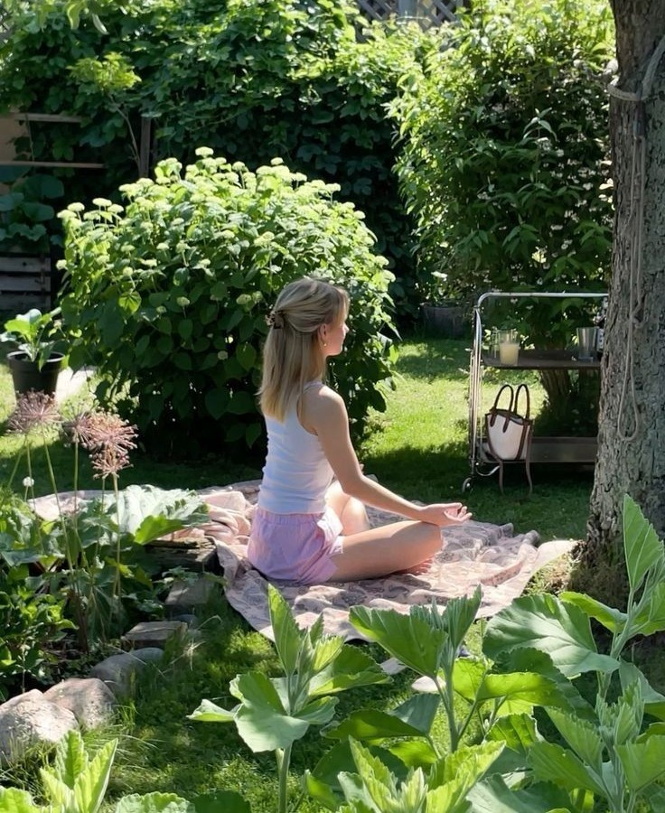

Как восстановиться после стресса
5 простых шагов, чтобы почувствовать себя лучше после эмоционального выгорания.

Здоровое питание без диет
Почему важно слушать своё тело, а не следовать модным советам.

Тревожность и сон
Как улучшить качество сна, если тревожные мысли не дают уснуть.